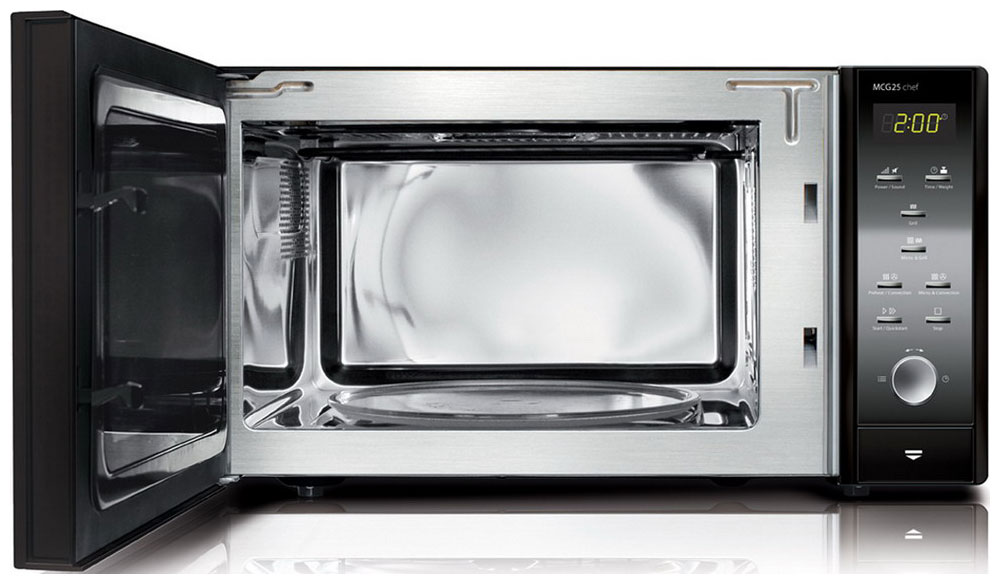

Автор : Ольга Фабиянчук
Микроволновые печи уже достаточно давно вошли в жизнь обычных людей, как удобный и необходимый атрибут на кухне. С ее помощью можно быстро что-то приготовить, разморозить или подогреть. От того, что пользоваться ей легко, и необходимые задачи она выполняет быстро, люди к ней очень привыкли, а некоторые, даже не представляют себе, как без нее можно обойтись, если она «помощница» во всем.
О том, что микроволновая печь может быть вредна никто даже не задумывается…
Мы всегда очень быстро привыкаем к комфорту и, чем бы не оборачивался для нас этот «комфорт» позднее, стараемся держаться за него до последнего.
Это касается и удобного дивана, на котором мы любим посидеть или «поваляться», и порой, отъедаем на нем свои килограммы перед еще одной «полезной» вещью — телевизором. Телевизор – это отдельная тема, поэтому здесь эту мысль продолжать бесполезно. Одним абзацем не ограничишься.
Предлагаю вернуться к микроволновым печам и посмотреть, как зарекомендовала себя эта печь на сегодняшний день?
Почему появились противники этих «чудо-печей»?
И чем оправдано их опасение, по поводу вреда?
Что говорят производители?
Кто может признаться, что его товар вреден или опасен?
Тем более если этот товар приносит миллиардные прибыли?!
Производителям остается только хвалить свой товар, ссылаясь на то, что здоровье каждого человека, купившего микроволновую печь – это его личное дело и забота.
Вопросы совести в бизнесе, при наличии больших денег, чаще всего отсутствуют.
Что же говорят рекламные буклеты о микроволновых печах?
Поискала специально для этой статьи, так как никогда этим не интересовалась.
Одна известная компания именно так позиционирует свой товар:
«Быстро, вкусно и полезно для здоровья: благодаря новому поколению микроволновых печей теперь все это доступно Вам за завтраком, обедом и ужином. Сейчас найти время для приготовления полезных блюд особенно трудно. Однако новые «кухонные помощники» позволят Вам с легкостью приготовить вкусную еду для семьи и друзей»
Ну что же:
быстро – возможно, если это небольшая порция,
вкусно — наверное, лично я не пробовала.
А на счет полезно – или бессовестно врут, или ненамеренно вводят в заблуждение, по причине недостаточной информированности в этом вопросе.
Вам как больше нравится думать?
Как бы ни было, но ни кто не говорит о вреде приготовленной пищи в микроволновой печи, как-будто его не существует.
В очень редких случаях, упоминается только возможный вред от излучения, которое исходит так же и от мобильных телефонов, телевизоров, компьютеров и других, привычных для нас, электроприборов.
Современному человеку остается только задаваться вопросом: «Что же теперь делать? От всего отказаться?»
Есть ли исследования по поводу влияния микроволновых печей?
Конечно есть. И вот некоторые из тех, которые говорят об отрицательном воздействии микроволновых печей на пищу и живой организм, думаю, это далеко не весь список.
Исследования в США (1992 г) «…введенные в организм человека молекулы подвергшиеся воздействию микроволн могут причинить вред. Такие молекулы пищи содержат микроволновую энергию, которой нет в пищевых продуктах приготовленных обычным путём».
Профессор Томас Тиль (Вена 1986 г) высказался против микроволновых печей: «…действительно небольшие порции разогреваются быстро, но если порции большие, то преимущества, в сравнении с традиционным способом разогрева, ни какого нет. И вкус пищи значительно меняется»
Научный журнал «The Lancet» (1989 г): «Исследования в Венском университете установили, что микроволнами, при нагревании пищи, нарушается атомный порядок аминокислот. Возникает обеспокоенность, по поводу того, что эти аминокислоты встраиваются в протеины, которые они впоследствии структурно, функционально и иммунологически изменяют. Микроволнами в пище меняются – основы жизни — протеины»
Доктор Ханс Ульрих Хертел (1991 г), уволенная из одной крупной швейцарской компании, за разглашение результатов исследований, опубликовала данные, подтверждающие, что пища, приготовленная в МВ печи, создает угрозу для здоровья.
Некоторые факты о вреде, опубликованные в журнале «Earthletter» (1991г) доктором Лита Ли: «Все МК печи имеют утечки электромагнитного излучения, ухудшают качество пищи, преобразуя её вещества в канцерогенные и токсичные соединения.»
В качестве эксперимента, проводились пробы крови (перед и после приема пищи) У людей, получивших пищу из микроволновки, наблюдалось изменение состава холестерина, понижение гемоглобина и увеличение количества лимфоцитов. У тех же, которые ели пищу, приготовленную традиционным способом, состояние организма не менялось»
Микроволновое облучение – превращение продуктов питания в канцерогены!
Результаты российского исследования, в отличии от предыдущих, более подробно описывают, какие именно происходят изменения в пище после микроволнового воздействия.
Некоторые из них:
Микроволновая печь делает детское питание токсичным!
Многих деток, в наше время, вскармливают искусственными заменителями молока, «благодаря» микроволновкам эти смесь становятся еще более токсичными.
Микроволновая печь создает не существующие в природе соединения, называемые радиолитическими. Некоторые из аминокислот, входящие в состав молока матери и в молочные смеси для детей, преобразуются в d-изомеры, которые являются нейротоксичными (деформируют нервную систему) и нефротоксичными (ядовитыми для почек).
Негативное воздействие близости микроволновой печи.
Возникают следующие проблемы в организме, при непосредственной близости с микроволновой печью:
Можно еще много находить публикаций на эту тему. Но выводы можем сделать и на основании уже изложенной информации.
Вредна ли пища приготовленная в микроволновой печи?
Предлагаю подвести итог, что бы ни чего не упустить из виду.
И так, самое простое объяснение: «Пища, приготовленная в микроволновой печи, теряет все свои полезные и природные свойства, становится токсичной, опасной для здоровья и такую пищу употреблять нельзя»
Потому, что многочисленные исследования доказывают образование канцерогенов практически в любой пище, подвергшейся воздействию микроволновым излучением. В мясе, фруктах, овощах, замороженных, приготовленных или сырых, не зависимо от того длительное было воздействие или нет, результат один – пища опасна!
Говоря простым и понятным языком, пища, обработанная в микроволновой печи, вызывает серьезные нарушения пищеварительной, лимфатической и иммунной систем. А так же приводит к опухолям в пищеварительном тракте и может вызвать рак.
Вниманию родителей!
Детское искусственное питание, а так же материнское грудное молоко недопустимо разогревать в микроволновой печи!
При воздействии микроволн, молоко меняет свои свойства на токсические и действует на детский, неокрепший организм губительно, — становится ядовитым для почек и деформирует нервную систему ребенка!
Очень надеюсь, что не найдется таких родителей, которые намеренно будут кормить своего ребенка опасным продуктом питания.
Смогла ли я ответить на вопрос: «Вредна ли пища приготовленная в микроволновой печи?»
Решать конечно Вам.